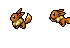
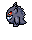

Введіть URL sitemap.xml для виявлення URL сторінок
")
")
")
")
")


Результати сканування з'являться тут
| # | URL сторінки | Статус | TTFB | FCP | LCP | CLS | TBT | ШРИФТИ | Дії |
|---|---|---|---|---|---|---|---|---|---|
|
Сторінок за вказаним пошуковим запитом не знайдено |
|||||||||
|
🔤
🔤 системні шрифти
|
Сканується... ⚠️ |
|
|||||||
Запустіть або завершіть сканування для розрахунку загальної статистики сайту
📈 Порівняння з попереднім скануванням
⏱️ Середні показники Web Vitals по всім сторінкам
🐌 Найповільніші ресурси сайту (Site-Wide Bottlenecks)
Ранжовано за затримкою на всьому сайті| Ресурс / Файл | Тип | Зустрічається | Сер. час (ms) | Сумарна затримка |
|---|---|---|---|---|
🖼️ Найбільші зображення сайту (Largest Images)
Ранжовано за обсягом переданих даних🔤 Аналіз шрифтів сайту (Font Usage & Frequency)
Частота використання гарнітур на сторінках🎯 Глобальний план дій для розробників
Запустіть сканування сторінок для аналізу зображень та формування порівняльної таблиці
Критичне зображення для LCP (Аудит hero-8 / LCP Assets)
🔤 Інспектор Шрифтів Сайту (Font Hub)
Повний посторінковий аналіз гарнітур, типографіки та часу завантаження
Не виявлено зовнішніх шрифтів
Після сканування тут з'явиться детальний аналіз усіх гарнітур, завантажених на сторінках вашого сайту.
Немає сканованих сторінок
Запустіть сканування сторінок для формування посторінкового звіту про шрифти.
⧉ Інспектор iframe
Де iframe на сторінках, що встигли завантажитись під час load, і скільки пропущено (lazy / below-fold)
iframe не виявлено
Після сканування тут з’явиться список iframe по сторінках і скільки не встигли завантажитись під час load.
📝 Інспектор форм сайту (Form Hub)
Виявлення форм, аналіз полів, обов'язковості, валідації, reCAPTCHA v2/v3, Turnstile та CRM/Pardot/Greenhouse інтеграцій
Форм не знайдено або сканування ще не запущено
Запустіть сканування сайту з панелі зліва, щоб автоматично виявити всі форми, поля, налаштування reCAPTCHA та інтеграції.